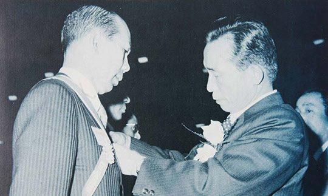

연재일 2014-07-08출처 조선일보 프리미엄조선 연재
진정한 신뢰로 위대한 일을 창조한 ‘롤 모델’이 우리 권력동네엔 없는가? ‘박정희와 박태준’이 답할 것이다. 한국산업화의 강건한 견인차였던 포항종합제철, 지난 3일로 준공 41주년을 맞았다.
“포철은 박정희 대통령의 강력한 의지와 박태준 사장의 탁월한 리더십을 바탕으로 성공할 수 있었다.” 미국 스탠포드대 MBA의 분석이다. 이 연재는 두 인물의 신뢰가 위대한 만남으로 나아간 궤적이다./글쓴이
<프롤로그> 왜 위대한 만남인가?(上)
박근혜 대통령의 ‘새 정부’ 출범으로 결말난 2012년 대선 과정에서 ‘박정희 대통령’ 평가는 공과(功過) 또는 명암(明暗)으로 선명히 갈렸다. 세대 간 인식의 낙차도 뚜렷하여 젊은 세대는 과(암)에 대한 학습효과의 기억이 두텁고, 오십대 이상은 공(명)의 역사적 가치에 대한 긍정이 두터웠다.
박정희의 ‘공(명)’은 무엇보다도 경제개발에 성공했다는 것이고, ‘과(암)’는 그것을 위해 민주주의를 억압하고 독재정치를 했다는 것이다. 그 대선을 거치는 동안 과(암)의 대표적 목록에는 쿠데타, 유신체제, 김지하 시인, 인혁당 사건, 부마사태 등이 올랐다.
초헌법적 무력 활용을 통해 정권을 장악했으니 ‘쿠데타’라 불러야 마땅한 5·16에 대하여 장준하는 1961년 6월호 <사상계> 권두언에서 “4·19혁명이 민주주의 혁명이었다면 5·16혁명은 민족주의적 군사혁명”이라 했다. 암울한 시대에 비판적 지성의 거점이요 산실이었던 <사상계> 발행인 장준하의 그것은 4·19 직후 한국사회를 질타하는 격문에 가까웠다.
“민주당은 혁명 과업의 수행은커녕 추잡하고 비열한 파쟁과 이권운동에 몰두하여 바쁘고 귀중한 시간을 부질없이 낭비해 …… 국민경제는 황폐화하고 대중의 물질생활은 더 한층 악화되고 사회적 부는 소수자의 수중으로 집중하였다. 그 결과로 절망, 사치, 퇴폐, 패배주의 풍조가 이 강산을 풍미하고 있었다.”
그때 상황을 통찰하고 통탄한 장준하가 박정희처럼 5·16을 ‘혁명’이라 불렀다 해도 5·16 그 자체는 쿠데타였다.
그러나 5․16의 장도는 그 귀결이 혁명에 이르렀다고 평가하는 견해도 두텁게 형성돼 있다. 5·16은 쿠데타로 출범하여 혁명에 귀결했다고 평가할 경우, ‘귀결이 혁명’이라는 그 속에 박정희의 공(명)이 시대적 실체로 존재한다. 그 공(명)의 뒷면이 과(암)이다. 그 과(암)는 ‘독재’라 불린다. 여기서 엄중한 질문이 기다린다. 명확한 대답을 듣고 싶은 이들이 적잖을 것이다.
‘과연 독재 없는 혁명이 있을까? 혁명 없는 독재는 있지만, 독재 없는 혁명이 있을 수 있을까? 노동해방의 공산주의혁명에도 반드시 프롤레타리아독재가 있어야 한다지 않는가? 이 역사의 한계를 어느 나라 어느 민족이 맨 처음 돌파할 것인가?’
대한민국의 역사에서 ‘혁명’이라 부를 만한 박정희의 공(명)은 산업, 의식, 안보(국방), 녹색 등으로 크게 분류할 수 있다. 산업혁명은 오천년 절대빈곤의 농경사회를 산업사회로 확실히 탈바꿈시켰다는 것이다. 이를 ‘한강의 기적’이라 했다. 그 기적의 저변에는 ‘공돌이’ ‘공순이’라 불린, 2014년 현재 예순 살을 넘은 기성세대의 피땀이 쌓여 있었다.
의식혁명은 산업화의 정신적 동력이었다. 조선시대의 신분세습과 노예제도와 사농공상과 소중화(小中華) 맹신, 그리고 식민지, 전쟁, 절대빈곤, 부정부패 등이 대대로 조장해온 패배주의, 사대주의, 파벌주의, 한(恨), 심지어 ‘엽전’이라 불린 그 오래고 어두운 의식구조에다 “우리도 하면 된다” “세계로 나아가자”라는 도전의식과 진취기상을 불어넣었던 것이다.
안보혁명은 최초로 자주국방을 기획하고 실천했다는 것이다. 임진왜란 후 류성룡이 피눈물로 쓴 『징비록』에서 그토록 강조한 ‘자강(自彊)의 국가’가 그로부터 350년이나 더 지난 뒤에야 국가의 진정한 비전으로 추진되었다. 자주국방, 부국강병 없는 근대 독립국가는 없다.
녹색혁명은 헐벗은 강토를 푸르게 가꾸었다는 엄연한 사실이다. 오늘날 우리의 마음까지 푸르게 물들여주는 푸른 산들은 박정희 통치시대가 물려준 ‘푸른 혁명’의 푸른 증거이다.
1973년 4월 17일 박정희 대통령이 박태준 포항제철 사장에게 금탑산업훈장을 수여하고 있다.
박태준의 공적은 박정희의 혁명이라 부를 만한 그 공(명) 속에 소중한 맥락을 형성하고 있다. 산업혁명에는 종합제철의 대성공이 있다. 의식혁명에는 철저히 추구한 세계일류주의가 있다. 안보혁명에는 세계 최고 제철소뿐 아니라 포항공과대학교(POSTECH), 포항산업과학연구원(RIST), 포항방사광가속기연구소의 바탕에 흐르는 “철강과 과학기술은 국부(國富)와 국방의 원천”이라는 확고한 신념과 실천이 있다.
1962년 1월 ‘무연탄을 쓰면 자원도 되고 산림녹화도 된다’는 이정환 국립광물지질연구소 소장의 캐치프레이즈는 녹색혁명의 나침반과 같았다. 석탄개발과 십구공탄 보급으로 이어지는 그 앞에 박정희 국가재건최고회의 의장을 모셔간 이가 상공담당 최고위원 박태준이었다. 마침 박정희와 박태준은 그것을 국토녹화의 전략으로 지목하고 있었다.
박태준은 ‘녹색’ 애착이 유난했다. 생전의 김수환 추기경이 “낙원”이라 칭송하고 빅토르 사도브니치 모스크바대학 총장이 “레닌 동지가 꿈꾸던 이상향”이라 부러워한 포항과 광양의 포스코 사원주택단지는 한국 ‘녹색주거’의 선구적 모범으로 실존하고 있다.
이렇게 박태준의 공적은 박정희의 공(명) 속에 소중한 맥락을 형성하지만 박정희의 과(암)가 박태준의 공적을 가리지는 않는다. 이것은 대한민국 산업화시대에 불가분의 관계였던 두 인물의 관계를 감안해볼 때 매우 특이하고 진귀한 일이다. 이유는 뜻밖에 간단하다. 박정희가 자신의 과(암)를 기록한 ‘정치’ 방면이 아니라 자신의 공(명)을 세우는 ‘경제’ 방면에 박태준을 배치했고, 박정희의 ‘정치’ 진출 권유를 거부하기도 했던 박태준이 그에게서 부여받은 사명을 훌륭하게 실현했다는 것이다.
물론 그 사명은 포항종합제철(POSCO)을 탁월하게 성공시켜 철강과 연관된 수많은 국내 산업들의 국제경쟁력 확보와 지속 성장에 크게 기여하면서 한국 철강업을 세계 일류로 우뚝 세우자는 시대적 대의(大義)였다.
2014년 7월 8일 [프리미엄 조선 연재]
